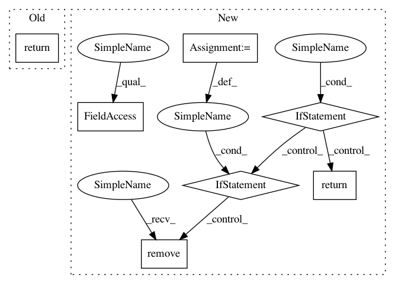

4d475b37f86f5391504468abddad5eaa619e595d,src/python/pants/backend/jvm/subsystems/zinc.py,Zinc,dist,#Zinc#,194
Before Change
:rtype: list of str
return self._zinc_factory.dist
@memoized_property
def compiler_bridge(self):
Return the path to the Zinc compiler-bridge jar.
After Change
:rtype: pants.java.distribution.distribution.Distribution
underlying_dist = self.underlying_dist
if self._execution_strategy != NailgunTaskBase.HERMETIC:
// symlink .pants.d/.jdk -> /some/java/home/
jdk_home_symlink = os.path.relpath(
os.path.join(self._zinc_factory.get_options().pants_workdir, ".jdk"),
get_buildroot())
// Since this code can be run in multi-threading mode due to multiple
// zinc workers, we need to make sure the file operations below is atomic.
with self._lock:
// Create the symlink if it does not exist
if not os.path.exists(jdk_home_symlink):
os.symlink(underlying_dist.home, jdk_home_symlink)
// Recreate if the symlink exists but does not match `underlying_dist.home`.
elif os.readlink(jdk_home_symlink) != underlying_dist.home:
os.remove(jdk_home_symlink)
os.symlink(underlying_dist.home, jdk_home_symlink)
return Distribution(home_path=jdk_home_symlink)
else:
return underlying_dist
@property
def underlying_dist(self):
:rtype: pants.java.distribution.distribution.Distribution
In pattern: SUPERPATTERN
Frequency: 3
Non-data size: 7
Instances
Project Name: pantsbuild/pants
Commit Name: 4d475b37f86f5391504468abddad5eaa619e595d
Time: 2018-09-24
Author: wisechengyi@gmail.com
File Name: src/python/pants/backend/jvm/subsystems/zinc.py
Class Name: Zinc
Method Name: dist
Project Name: home-assistant/home-assistant
Commit Name: 3c5e62d47eeded341b41cbe769f3e29b7b6f1614
Time: 2018-08-19
Author: paulus@paulusschoutsen.nl
File Name: homeassistant/components/recorder/migration.py
Class Name:
Method Name: migrate_schema
Project Name: pantsbuild/pants
Commit Name: 4d475b37f86f5391504468abddad5eaa619e595d
Time: 2018-09-24
Author: wisechengyi@gmail.com
File Name: src/python/pants/backend/jvm/subsystems/zinc.py
Class Name: Zinc
Method Name: dist
Project Name: home-assistant/home-assistant
Commit Name: 9e1fa7ef42cbad0f2fe36e51651a6f1d00d31dec
Time: 2018-08-19
Author: paulus@paulusschoutsen.nl
File Name: homeassistant/components/recorder/migration.py
Class Name:
Method Name: migrate_schema